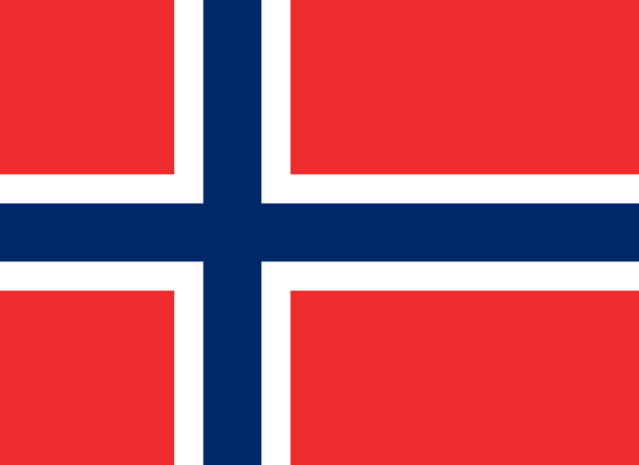

Número de mortos na SGM


"A guerra é um lugar onde jovens que não se conhecem e não se odeiam se matam entre si, por
decisões de velhos que se conhecem e se odeiam, mas não se matam." - Erich Hartman, ex-piloto da
Luftwaffe.
| País | Número de mortos entre civis e militares | |
|---|---|---|
| UNIÃO SOVIÉTICA | 24.000.000 | |
| CHINA | 20.000.000 | |
| ALEMANHA | 8.000.000 | |
| POLÔNIA | 5.600.000 | |
| ÍNDIAS ORIENTAIS NEERLANDESAS | 3.500.000 | |
| JAPÃO | 2.870.000 | |
 |
ÍNDIA BRITÂNICA | 2.087.000 |
| INDOCHINA FRANCESA | 1.600.000 | |
| IUGOSLÁVIA | 1.000.000 | |
| ROMÊNIA | 833.000 | |
| FILIPINAS | 807.000 | |
| HUNGRIA | 580.000 | |
| FRANÇA | 567.600 | |
| ITÁLIA | 457.600 | |
| GRÉCIA | 563.500 | |
| REINO UNIDO | 450.700 | |
| COREIA | 430.000 | |
 |
ESTADOS UNIDOS | 418.500 |
| ÁUSTRIA | 384.700 | |
| LITUÂNIA | 353.000 | |
| CHECOSLOVÁQUIA | 345.000 | |

|
HOLANDA | 301.000 |
 |
BIRMÂNIA BRITÃNICA | 272.000 |
| LETÔNIA | 227.000 | |
| ETIÓPIA | 100.000 | |
| MALÁSIA BRITÂNICA | 100.000 | |
 |
FINLÂNDIA | 97.000 |
| BÉLGICA | 86.100 | |

|
ESTÔNIA | 51.000 |
| SINGAPURA BRITÂNICA | 50.000 | |
| CANADÁ BRITÂNICO | 45.400 | |
| AUSTRÁLIA BRITÂNICA | 40.500 | |
| ALBÂNIA | 30.200 | |
 |
BULGÁRIA | 25.000 |
| NOVA GUINÉ BRITÂNICA | 15.000 | |

|
NOVA ZELÂNDIA BRITÂNICA | 11.900 |
| ÁFRICA DO SUL BRITÂNICA | 11.900 | |
|  | NORUEGA | 9.500 |
| TAILÂNDIA | 7.600 | |
| DINAMARCA | 3.200 | |
| BRASIL | 2.000 | |
| LUXEMBURGO | 2.000 | |
| IRAQUE | 500 | |
| IRLANDA | 200 | |
| IRÃ | 200 | |
| TURQUIA | 200 | |
| ISLÂNDIA | 200 | |

|
MÉXICO | 100 |
| TOTAL | Aproximadamente 70.000.000 |
Esses números podem variar, dependendo da fonte, o número total
de mortos varia entre 50 a 85 milhões.
Imagens das bandeiras retiradas do site Wikipedia, imagem
do globo
retirado do site Netclipart.
Dados retirados do site national ww2
museum e do canal
DGP
Mundo.